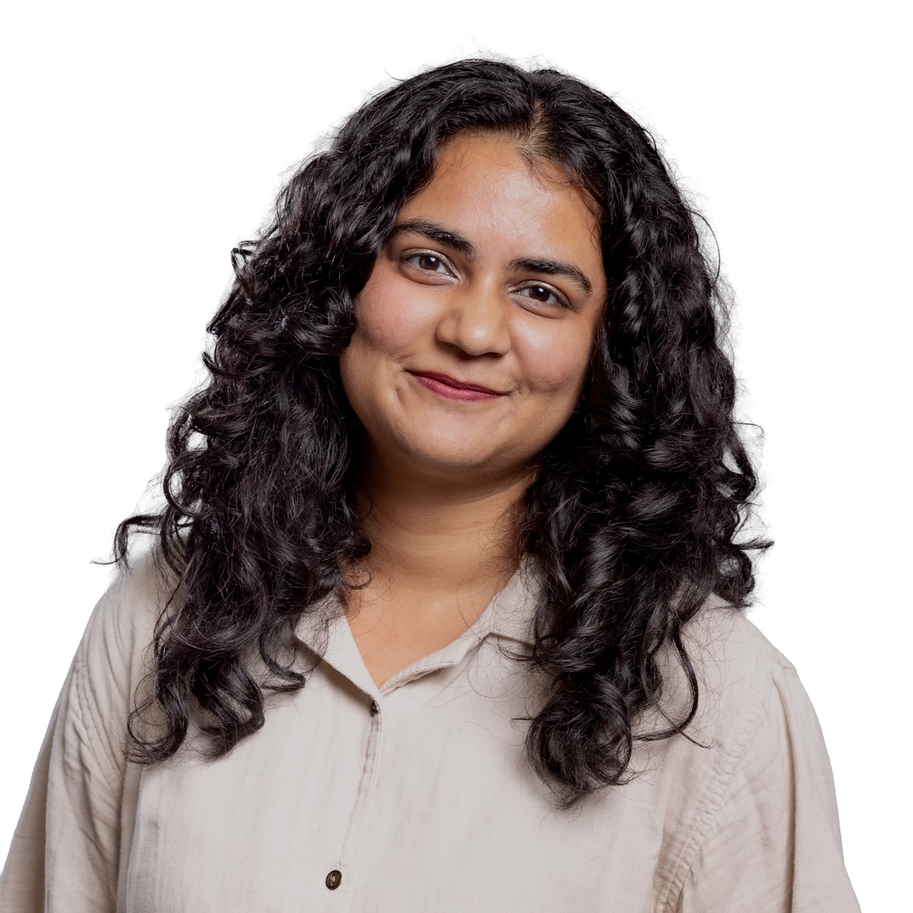

Hi, I'm Aakshi. I research how people interact with media and audio, and translate that into better products and marketing decisions.
I have a Master's in Marketing Communication Research from Boston University, where I focused on UX research, market research, and media studies. Before that, I did my undergrad at Minerva University, which meant spending each semester in a different city: San Francisco, Seoul, Hyderabad, Berlin, and Buenos Aires. Living and studying across five countries shaped how I think about culture, people, and the way context changes everything.
My path into research hasn't been purely academic. At Tink Media, I worked as a Growth and Marketing Specialist, doing research for client podcasts, finding ad swap opportunities, guest leads, and audience insights for shows like The Ten News, Play On Podcasts, and The Trail Ahead. At Minerva, I organized six independent music concerts for 150+ students from 60 countries, led cultural exchange events, and produced two podcasts from scratch, one on Indian history and one on emotional intelligence for first-year students.
I'm always curating my experience of the world, especially through music and sound.

I shared my coming out playlist on this show, twelve songs that helped me understand and express my sexuality. It was one of the most personal things I've put out into the world.
Listen →I talked with the host about growing up across India, my years at Minerva studying in five cities, and how music and community kept me grounded through all of it. We also got into partition, identity, mental health, and what it means to carry history in your body.
Listen →I joined the host to talk about my time at Tink Media, how I got into the podcast industry, and why collaborating with small niche shows is often more valuable than chasing big numbers. We also talked about curated playlists, which honestly felt very on brand for me.
Listen →